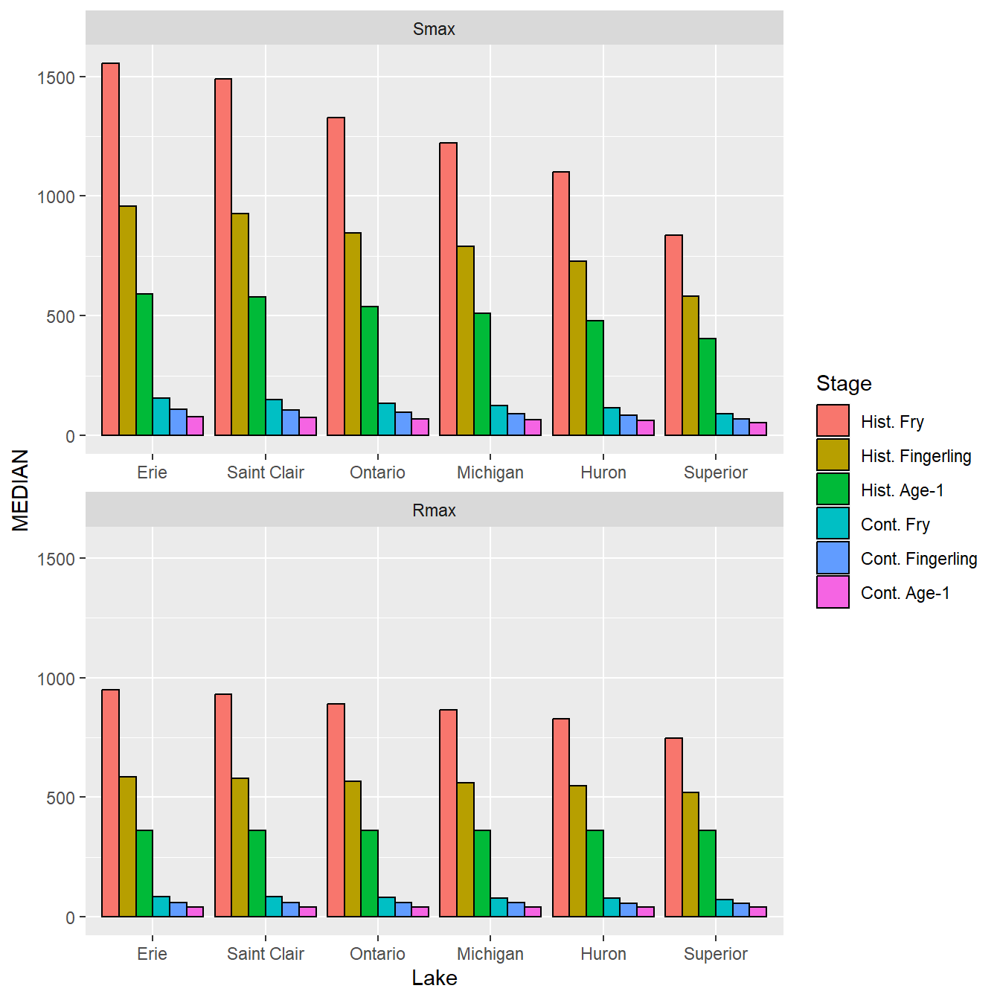
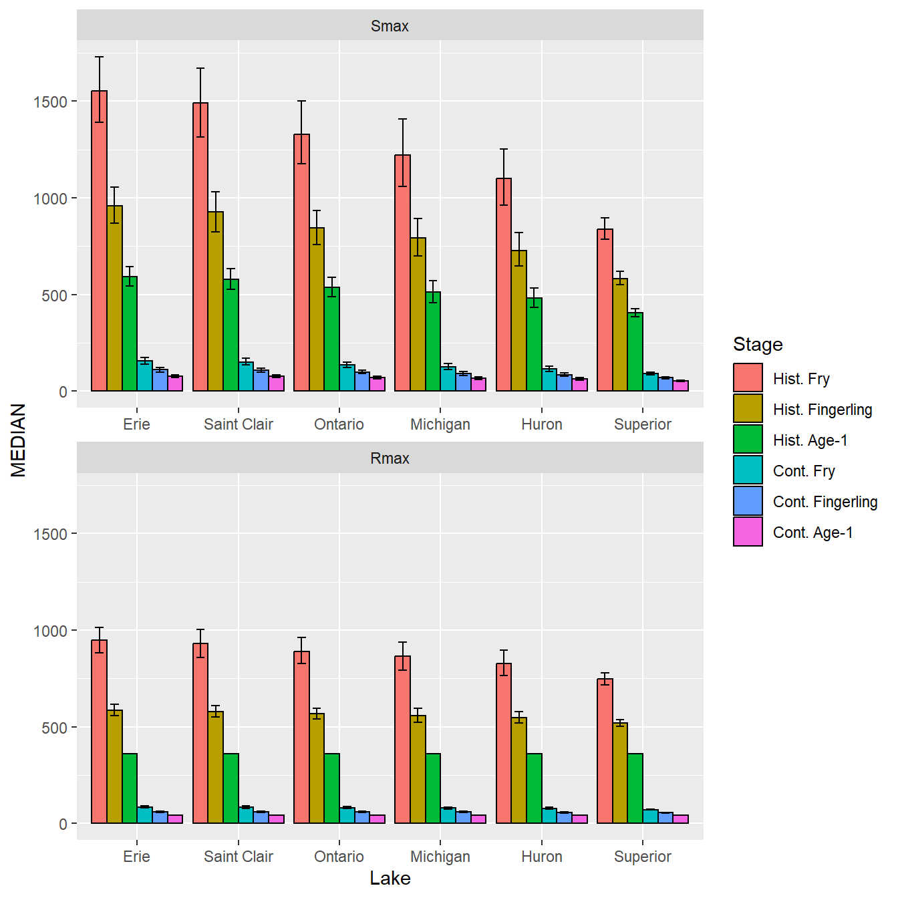
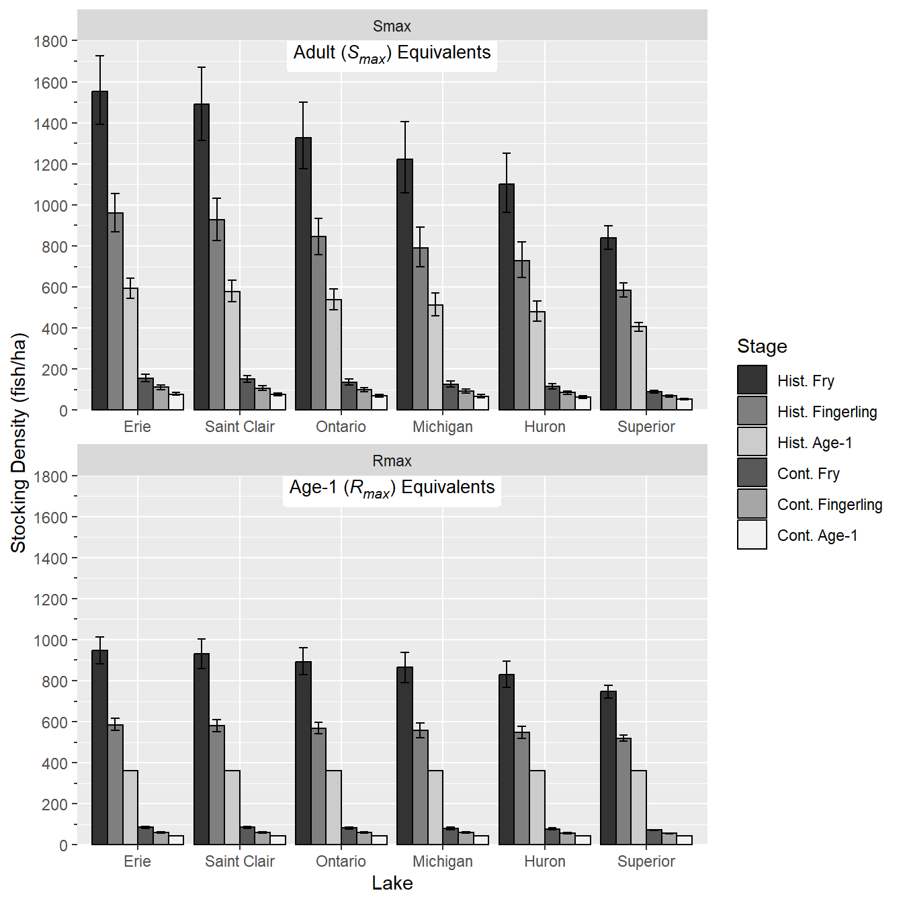
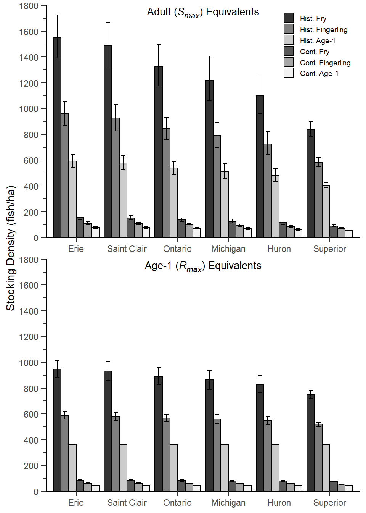

library(tidyverse) # for dplyr, ggplot2 packages
library(ggh4x) # for minor axis functionalityIntroduction
Rook et al. (2022) analyzed historical data to answer the question of how many ciscoes are needed for stocking in the Laurentian Great Lakes. Their Figure 4 shows lake-specific estimates of fry, fall fingerling, and age-1 stocking densities used to determine the number of Cisco (Coregonus artedi) needed for stocking to mimic historical and contemporary age-1 and adult recruitment rates in Wisconsin waters of Lake Superior. I attempt to recreate their figure here.
The following packages are loaded for use below. Also one function from each of scales and ggtext is used with :: such that the entire packages are not attached here.
Note
The figure recreated here is often called a “dynamite plot.” I understand that there is controversy around these types of plots (see here]. However, they appear often in the fisheries literature, for better or worse. With this in mind, I thought it worthwhile to some to show how one might be constructed with ggplot2.
Get Data
Rook et al. (2022) provided summarized data presented in Figure 4 in their Data Supplement S1. Unfortunately the data were provided as a table in a MSWord document. I tried to extract the data from the Word document using the officer package but was unsuccessful. Fortunately, the tables looked like they were originally created in MSExcel, so I copied the “Smax” (i.e., “adult equivalents”) and “Rmax” (age-1 equivalents) portions of the table and pasted them into separate sheets of a single Excel file.
Each sheet is read into a temporary data frame below. Note that the authors used “N/A” to represent missing values so this was accounted for with na=. Further note that a new variable called Type was added to each data frame to identify whether the data represented the “Smax” or “Rmax” results.
tmp1 <- readxl::read_excel("Rooketal2021_S1.xlsx",sheet="Smax",na=c("","N/A"))
tmp2 <- readxl::read_excel("Rooketal2021_S1.xlsx",sheet="Rmax",na=c("","N/A"))The two data frames were then row-bound (i.e., stacked) together by putting the data frames into a name list that is given to bind_rows(). The .id= argument will create a new variable called Type with the names from the list. Additionally, the Lake variable was renamed to Summary (it contains the summary metrics) and the original “long” names were abbreviated to match those used in the legend of Figure 4 in Rook et al. (2022).1
1 as.data.frame() is used to make this a regular data frame rather than a “tibble.”
tmp <- bind_rows(list(Smax=tmp1,Rmax=tmp2),.id="Type") |>
rename(Summary=Lake,
`Hist. Fry`=`Historical Fry`,`Hist. Fingerling`=`Historical Fingerling`,
`Hist. Age-1`=`Historical Age-1`,`Cont. Fry`=`Contemporary Fry`,
`Cont. Fingerling`=`Contemporary Fingerling`,`Cont. Age-1`=`Contemporary Age-1`) |>
as.data.frame()
head(tmp)#R| Type Summary Hist. Fry Hist. Fingerling Hist. Age-1 Cont. Fry
#R| 1 Smax Erie 1553 959 593 156
#R| 2 Smax U95 1727 1056 643 174
#R| 3 Smax L95 1391 870 545 140
#R| 4 Smax Saint Clair 1490 927 578 151
#R| 5 Smax U95 1671 1031 634 169
#R| 6 Smax L95 1314 825 527 135
#R| Cont. Fingerling Cont. Age-1
#R| 1 111 78
#R| 2 122 86
#R| 3 99 72
#R| 4 107 76
#R| 5 118 83
#R| 6 97 70These data are in an awkward format with the now-named Summary variable containing the lake name followed by U95 and L95 for the upper and lower 95% confidence interval endpoints. I would prefer to have a variable called Lake that would, for example, say Erie for the first three rows above and Saint Clair for the next three rows (and so on for the other lakes). Then, the lake names under Summary would be replaced with Median as the values to the right of the lake names are median stocking densities.
I begin by creating the Lake variable by rep()eating the names in the first, fourth, seventh, etc. positions in Summary three times. The first, fourth, seventh, etc. positions are identified as a sequence from 1 to 34 in intervals of 3.2
2 Lake was moved to the first variable with relocate() to better see the effect of this code.
tmp <- tmp |>
mutate(Lake=rep(Summary[seq(1,34,by=3)],each=3)) |>
relocate(Lake)
head(tmp)#R| Lake Type Summary Hist. Fry Hist. Fingerling Hist. Age-1 Cont. Fry
#R| 1 Erie Smax Erie 1553 959 593 156
#R| 2 Erie Smax U95 1727 1056 643 174
#R| 3 Erie Smax L95 1391 870 545 140
#R| 4 Saint Clair Smax Saint Clair 1490 927 578 151
#R| 5 Saint Clair Smax U95 1671 1031 634 169
#R| 6 Saint Clair Smax L95 1314 825 527 135
#R| Cont. Fingerling Cont. Age-1
#R| 1 111 78
#R| 2 122 86
#R| 3 99 72
#R| 4 107 76
#R| 5 118 83
#R| 6 97 70Now, the lake names in those same positions in Summary are replaced with “MEDIAN”.
tmp$Summary[seq(1,34,by=3)] <- "MEDIAN"
head(tmp)#R| Lake Type Summary Hist. Fry Hist. Fingerling Hist. Age-1 Cont. Fry
#R| 1 Erie Smax MEDIAN 1553 959 593 156
#R| 2 Erie Smax U95 1727 1056 643 174
#R| 3 Erie Smax L95 1391 870 545 140
#R| 4 Saint Clair Smax MEDIAN 1490 927 578 151
#R| 5 Saint Clair Smax U95 1671 1031 634 169
#R| 6 Saint Clair Smax L95 1314 825 527 135
#R| Cont. Fingerling Cont. Age-1
#R| 1 111 78
#R| 2 122 86
#R| 3 99 72
#R| 4 107 76
#R| 5 118 83
#R| 6 97 70These data are still in a format that is not conducive to plotting. What is ultimately needed is for the “MEDIAN”, “U95”, and “L95” to be variables with their respective values, and a variable should indicate the timing (“historical” or “contemporary”) and stage (“fry”, “fingerling”, or “age-1”) for those values.
I begin this process by creating a “longer” data frame that will stack the current “historical” and “contemporary” columns on top of each other. To do this use pivot_longer() where the columns to pivot in cols= are from Hist. Fry to Cont. Age-13, the values under those columns will now be in Number, and the names of those columns will be moved to Stage.
3 The : identifies all contiguous columns between the two columns identified.
tmp <- tmp |>
pivot_longer(cols=`Hist. Fry`:`Cont. Age-1`,values_to="Number",names_to="Stage")
head(tmp,n=12)#R| # A tibble: 12 × 5
#R| Lake Type Summary Stage Number
#R| <chr> <chr> <chr> <chr> <dbl>
#R| 1 Erie Smax MEDIAN Hist. Fry 1553
#R| 2 Erie Smax MEDIAN Hist. Fingerling 959
#R| 3 Erie Smax MEDIAN Hist. Age-1 593
#R| 4 Erie Smax MEDIAN Cont. Fry 156
#R| 5 Erie Smax MEDIAN Cont. Fingerling 111
#R| 6 Erie Smax MEDIAN Cont. Age-1 78
#R| 7 Erie Smax U95 Hist. Fry 1727
#R| 8 Erie Smax U95 Hist. Fingerling 1056
#R| 9 Erie Smax U95 Hist. Age-1 643
#R| 10 Erie Smax U95 Cont. Fry 174
#R| 11 Erie Smax U95 Cont. Fingerling 122
#R| 12 Erie Smax U95 Cont. Age-1 86The Summary column then needs to be “expanded” to form three new columns with the median and confidence interval endpoints. This is accomplished with pivot_wider() with the names of the new columns coming from Summary and the values in the new columns coming from Number.
tmp <- tmp |>
pivot_wider(names_from=Summary,values_from=Number)
head(tmp,n=12)#R| # A tibble: 12 × 6
#R| Lake Type Stage MEDIAN U95 L95
#R| <chr> <chr> <chr> <dbl> <dbl> <dbl>
#R| 1 Erie Smax Hist. Fry 1553 1727 1391
#R| 2 Erie Smax Hist. Fingerling 959 1056 870
#R| 3 Erie Smax Hist. Age-1 593 643 545
#R| 4 Erie Smax Cont. Fry 156 174 140
#R| 5 Erie Smax Cont. Fingerling 111 122 99
#R| 6 Erie Smax Cont. Age-1 78 86 72
#R| 7 Saint Clair Smax Hist. Fry 1490 1671 1314
#R| 8 Saint Clair Smax Hist. Fingerling 927 1031 825
#R| 9 Saint Clair Smax Hist. Age-1 578 634 527
#R| 10 Saint Clair Smax Cont. Fry 151 169 135
#R| 11 Saint Clair Smax Cont. Fingerling 107 118 97
#R| 12 Saint Clair Smax Cont. Age-1 76 83 70The Type, Lake, and Stage variables were then converted to factors with the levels controlled to match that of Rook et al. (2022). I also ordered the data by Stage within Lake within Type for personal preference.
dat <- tmp |>
mutate(Type=factor(Type,levels=c("Smax","Rmax")),
Lake=factor(Lake,levels=c("Erie","Saint Clair","Ontario","Michigan","Huron","Superior")),
Stage=factor(Stage,levels=c("Hist. Fry","Hist. Fingerling","Hist. Age-1",
"Cont. Fry","Cont. Fingerling","Cont. Age-1"))) |>
arrange(Type,Lake,Stage)This data frame, now called dat, is now ready for plotting.
Note
I suspect there is an easier way to wrangle these data into this format, but I don’t know what it is. It likely would have been easier to create this format from the raw data, rather than the tabularized results provided.
Recreating Figure 2
Preliminaries
Rook et al. (2022) used various shades of gray to identify the time-stage (i.e., Stage) data in their Figure 4. The object below is a named vector with approximations to their color choices.
sclrs <- c("Hist. Fry"="gray20","Hist. Fingerling"="gray50","Hist. Age-1"="gray80",
"Cont. Fry"="gray35","Cont. Fingerling"="gray65","Cont. Age-1"="gray95")Figure 4 is a side-by-side bar chart with confidence intervals on each bar. Sided-by-side bars require “dodging” in ggplot2 (see below). The confidence intervals also need to be “dodged” to match the bars, but they will only match if the “dodging” is pre-defined. Dodging is defined with position_dodge() using width= to determine how much the side-by-side objects will overlap. A width= of 0 will result in complete overlap, whereas a width= of 1 results in no overlap with a slight separation between bars. A value of 0.9 resulted in no overlap but touching bars as used in Rook et al. (2022).
pd <- position_dodge(width=0.9)Finally, Rook et al. (2022) labeled each panel of their Figure 4 within the plot region, rather than as a “title” above the plot region. Thus, as in this previous post about Rook et al. (2022), the default facet labels cannot be used. An added challenge here though is that the labels they used contain plain text, italicized text, and a subscript. Thus, the “trick” used in that post cannot be easily used here.
Here I create a very simple data frame with two variables. The first variable is Type which contains the two types of data found in dat. It is important that this variable is exactly as it is in dat (i.e., factored, levels the same) as this is the variable that is going to define the facets, or sub-panels, of Figure 4. The second variable, Label, contains the “long” labels for each panel. Here I use markdown code to create the italics (i.e., *) and the subscript (i.e., ~).4
4 These will be used in geom_richtext() from ggtext below, rather than plotmath which I find exceedingly difficult to get correct.
datlbls <- data.frame(Type=factor(c("Smax","Rmax"),levels=c("Smax","Rmax")),
Label=c("Adult (*S~max~*) Equivalents",
"Age-1 (*R~max~*) Equivalents"))Putting It Together
The basic bar plot is constructed from the summarized data in dat using geom_col() with Lake mapped to the x-axis, MEDIAN mapped to the y-axis, and Stage mapped to the fill= color. The bars will not be sided-by-side by default; they need to be “dodged” by setting postion= to the dodge position value set above. color= is set to black to outline each bar as in Rook et al. (2022). facet_wrap() is used to separate the plots by Type, with only one column used. The x-axis was “freed” so that the axis and labels would be shown in both facets as in Rook et al. (2022).
ggplot() +
geom_col(data=dat,mapping=aes(x=Lake,y=MEDIAN,fill=Stage),
position=pd,color="black") +
facet_wrap(vars(Type),ncol=1,scales="free_x")
Confidence intervals are added with geom_errorbar() with Lake again mapped to the x-axis, L95 and U95 mapped to the minimum and maximum y interval values, and Stage set as a group.5 To match the bars the confidence intervals must be dodged in the same way with postion= and the “cap” on the interval was made smaller with width=.
5 The data needs a group here to match the group created by fill= in geom_col().
ggplot() +
geom_col(data=dat,mapping=aes(x=Lake,y=MEDIAN,fill=Stage),
position=pd,color="black") +
geom_errorbar(data=dat,mapping=aes(x=Lake,ymin=L95,ymax=U95,group=Stage),
position=pd,width=0.5) +
facet_wrap(vars(Type),ncol=1,scales="free_x")
Colors were then set with scale_fill_manual() using the sclrs vector defined above. In addition, the y-axis was given a better title, the limits were set, axis expansion was removed, major breaks (i.e., labelled) were set at intervals of 200, and minor breaks were set at intervals of 100.6
6 These axis modifications were described in more detail in this post.
ggplot() +
geom_col(data=dat,mapping=aes(x=Lake,y=MEDIAN,fill=Stage),
position=pd,color="black") +
geom_errorbar(data=dat,mapping=aes(x=Lake,ymin=L95,ymax=U95,group=Stage),
position=pd,width=0.5) +
facet_wrap(vars(Type),ncol=1,scales="free_x") +
scale_fill_manual(values=sclrs) +
scale_y_continuous(name="Stocking Density (fish/ha)",
limits=c(0,1800),expand=expansion(mult=0),
breaks=scales::breaks_width(200),
minor_breaks=scales::breaks_width(100),
guide="axis_minor")
Labels are now added to the facets with geom_richtext() from the ggtext package. Here data= is set to datlbls, which is why data=dat was used in geom_col() and geom_errobar() rather than being set in ggplot().7 The Label in datlbls is mapped to the labels, but x= and y= are defined outside of the data frame. Specifically, x= is set to 3.5 because each category is listed behind the scenes with sequential numbers beginning at 1. With six categories on the x-axis, the center will be at 3.5. y= is set to Inf to generically be set at the largest y value plotted. Thus, the labels will be centered from left-to-right (x-axis orientation) and at the top (y-axis orientation). vjust= is used to move the label down slightly (see this post), label.color=NA removes the default box around the label, and size= was used to reduce the default size slightly.
7 If multiple data frames are used when constructing a figure, then those data frames are usually declared in the geoms rather than in ggplot().
ggplot() +
geom_col(data=dat,mapping=aes(x=Lake,y=MEDIAN,fill=Stage),
position=pd,color="black") +
geom_errorbar(data=dat,mapping=aes(x=Lake,ymin=L95,ymax=U95,group=Stage),
position=pd,width=0.5) +
ggtext::geom_richtext(dat=datlbls,mapping=aes(label=Label),x=3.5,y=Inf,
vjust=0.9,label.color=NA,size=3.5) +
facet_wrap(vars(Type),ncol=1,scales="free_x") +
scale_fill_manual(values=sclrs) +
scale_y_continuous(name="Stocking Density (fish/ha)",
limits=c(0,1800),expand=expansion(mult=0),
breaks=scales::breaks_width(200),
minor_breaks=scales::breaks_width(100),
guide="axis_minor")
Finally, the theme was modified to more closely match Figure 4 in Rook et al. (2022). Specifically, theme_class() was used as the base and facet labels were removed, the x-axis title was removed, major tick mark size was increased, minor tick mark size was set to 50% of the major tick mark size, the legend was moved to the upper right of the plot, the legend title was removed, the legend text was made smaller, and the legend box size was made smaller.
ggplot() +
geom_col(data=dat,mapping=aes(x=Lake,y=MEDIAN,fill=Stage),
position=pd,color="black") +
geom_errorbar(data=dat,mapping=aes(x=Lake,ymin=L95,ymax=U95,group=Stage),
position=pd,width=0.5) +
ggtext::geom_richtext(dat=datlbls,mapping=aes(label=Label),x=3.5,y=Inf,
vjust=0.9,label.color=NA,size=3.5) +
facet_wrap(vars(Type),ncol=1,scales="free_x") +
scale_fill_manual(values=sclrs) +
scale_y_continuous(name="Stocking Density (fish/ha)",
limits=c(0,1800),expand=expansion(mult=0),
breaks=scales::breaks_width(200),
minor_breaks=scales::breaks_width(100),
guide="axis_minor") +
theme_classic() +
theme(strip.text=element_blank(),
axis.title.x=element_blank(),
axis.ticks.length=unit(5,units="pt"),
ggh4x.axis.ticks.length.minor=rel(0.5),
legend.position=c(1,1),
legend.justification=c(1.05,0.95),
legend.title=element_blank(),
legend.text=element_text(size=7),
legend.key.size = unit(0.75,units="line")
)
This largely reproduces Figure 4 in Rook et al. (2022) with the exceptions that (a) the tick marks don’t cross the x-axes and (b) the x-axis tick marks are centered on the group of bars rather than between the group of bars.
References
Rook, B. J., M. J. Hansen, and C. R. Bronte. 2022. How many Ciscoes are needed for stocking in the Laurentian Great Lakes? Journal of Fish and Wildlife Management 13(1):28–49.
Reuse
Citation
BibTeX citation:
@online{h.ogle2023,
author = {Derek H. Ogle},
title = {Rook Et Al. (2022) {Estimated} {Cisco} {Stocking}
{Densities}},
date = {2023-03-20},
url = {https://fishr-core-team.github.io/fishR//blog/posts/2023-3-20-Rooketal2022_Fig4},
langid = {en}
}
For attribution, please cite this work as:
Derek H. Ogle. 2023, March 20. Rook et al. (2022) Estimated Cisco
Stocking Densities. https://fishr-core-team.github.io/fishR//blog/posts/2023-3-20-Rooketal2022_Fig4.